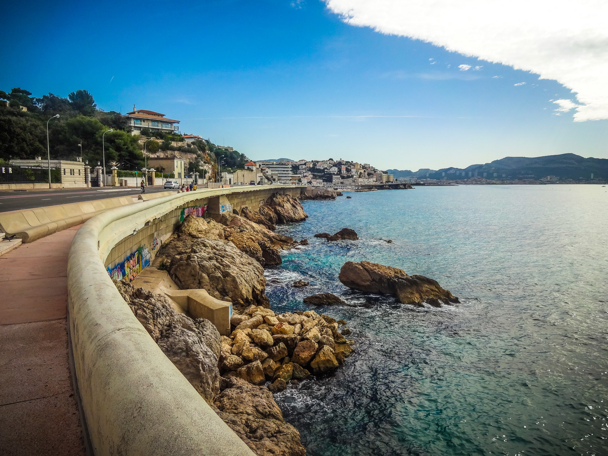
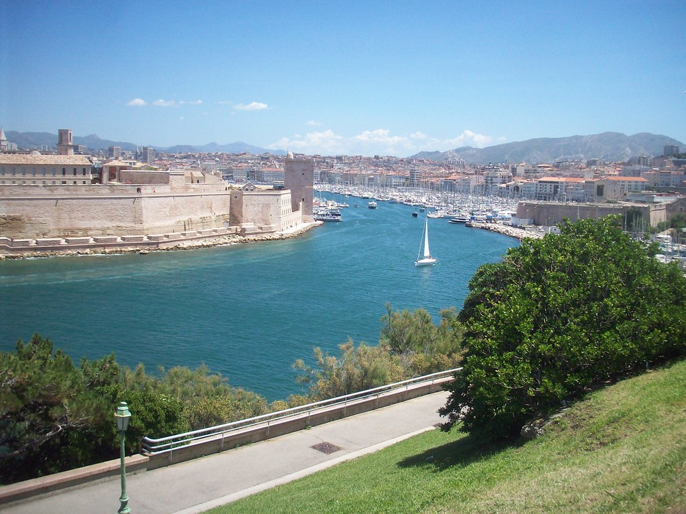
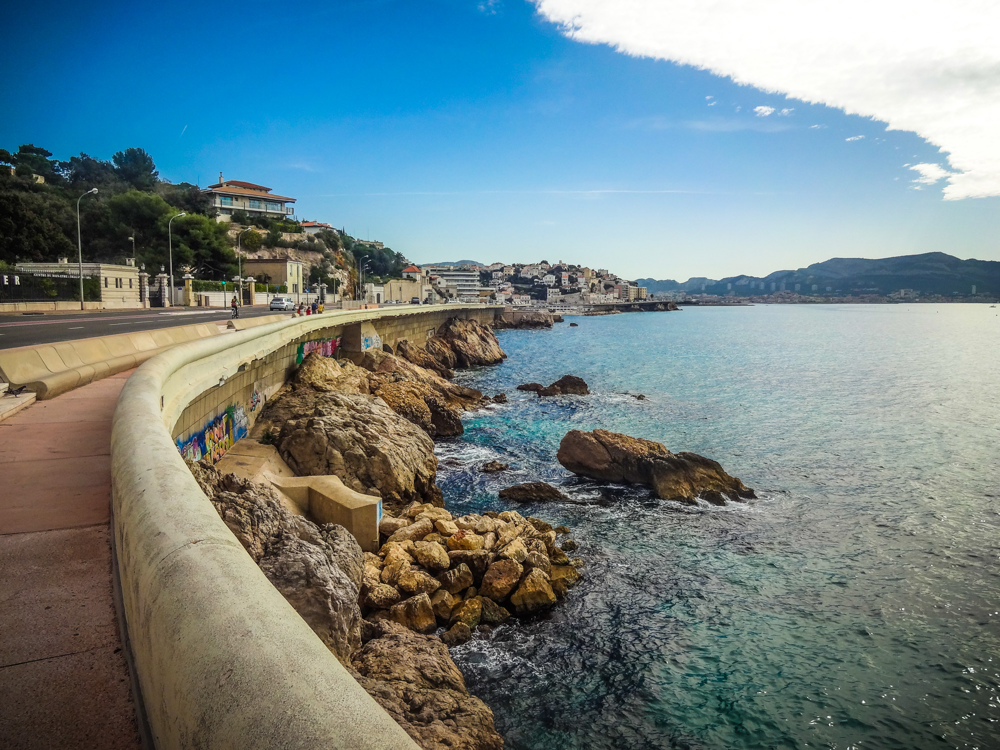
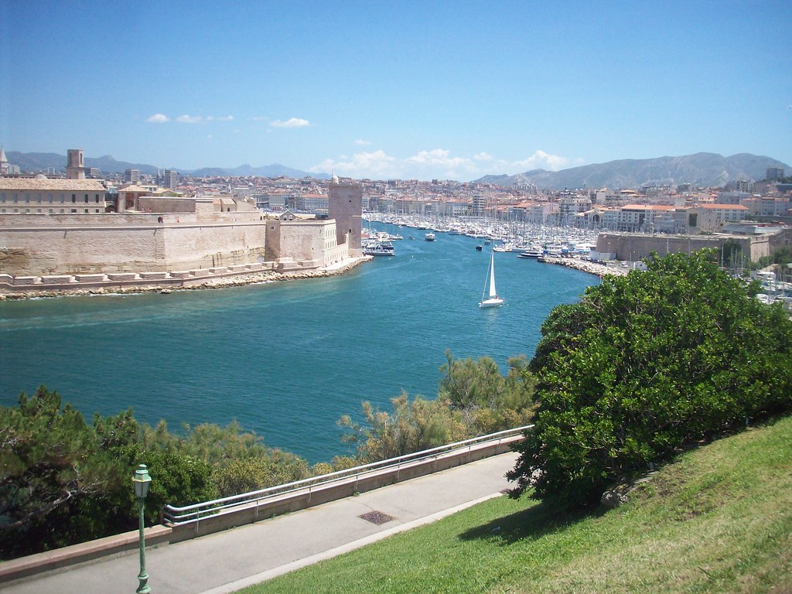

Les plus belles randonnée à Marseille
Faire une bonne randonnée à Marseille, quoi de mieux pour sortir de la ville et s’éloigner des bruits citadins ? Les environs de Marseille regorgent de superbes paysages qui ne demandent qu’à être découverts. Les randonnées autour de la citée phocéenne vous amèneront donc visiter les Calanques de Sormiou, les calanque d’En Vau, les calanques de Sugiton… Mais aussi les montagnes environnantes ou encore les petites villes aux abords. Pour vous guider dans le choix, le Magazine Sportihome vous fait un brief des 5 plus belles randonnées autour de Marseille. Préparez votre gourde, votre casquette et vos gambettes et c’est parti !
 



Visiter Marseille à pied : Entre le parc Borély et la Corniche
Le parc Borély est un poumon de verdure à quelques kilomètres du centre ville de Marseille. Situé à deux pas des plages du Prado, vous pourrez y découvrir un écrin de nature et de richesse historique. Au coeur du parc Borély, vous pourrez retrouver le château et ses différents jardins (anglais, français, chinois, japonais). Autant de raison pour vous permettre ce plongeon dans un autre temps. Une fois le tour de parc réalisé, la Méditerranée vous tendra ses bras. L’équipe Sportihome vous invite à déambuler sur le sable du Prado avant de continuer sur la Corniche. La Corniche vous offrira différents points de vue. D’une part sur la mer turquoise, d’une autre sur les magnifiques maisons qui la surplombent tout en apercevant la dame de la garde. Un monument incontournable de la ville. Si la balade vous séduit, vous pouvez la continuer jusqu’au Vieux Port de Marseille. Le Palais du Pharo vous offrira une toute autre vue bien plus urbaine mais toute aussi jolie sur la ville.